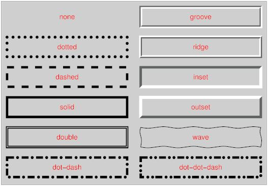

CSS
CSS
CSS(Cascading Style Sheets)는 HTML을 꾸며주는 디자인 언어 스타일시트입니다.
CSS 선택자
선택자를 통하여 요소를 선택하고 속성을 줄 수 있습니다.
| 태그 | 유형 | 설명 | 버전 |
|---|---|---|---|
| . | .class {color:#fff;} | 클래스 선택자 | CSS1 |
| # | .id {color:#fff;} | 아이디 선택자 | CSS1 |
| * | * {color:#fff;} | 전체 선택자 | CSS2 |
| element | p {color:#fff;} | 요소 선택자 | CSS1 |
| element, element | p, div {color:#fff;} | 그룹 선택자 | CSS1 |
| element element | div p {color:#fff;} | 후손 선택자 | CSS1 |
| element > element | div > p {color:#fff;} | 이웃 선택자 | CSS2 |
| element + element | div > p {color:#fff;} | 자식 선택자 | CSS2 |
| element ~ element | div ~ p {color:#fff;} | 형제 선택자 | CSS3 |
| [attribute] | p [class] {color:#fff;} | 속성 선택자 | CSS2 |
| [attribute=value] | p [class="white"] {color:#fff;} | 속성 선택자 | CSS2 |
| [attribute~=value] | p [class~="white"] {color:#fff;} | 속성 선택자 | CSS2 |
| [attribute^=value] | p [attr^="w"] {color:#fff;} | 속성 선택자 | CSS3 |
| [attribute*=value] | p [attr*="white"] {color:#fff;} | 속성 선택자 | CSS3 |
| [attribute$=value] | p [attr$="w"] {color:#fff;} | 속성 선택자 | CSS3 |
| :link | a:link {color:#fff;} | 방문하지 않은 링크 | CSS1 |
| :visited | a:visited {color:#fff;} | 방문한 링크 | CSS1 |
| :hover | a:hover {color:#fff;} | 마우스 오버 링크 | CSS1 |
| :active | a:active {color:#fff;} | 활성화된 링크 | CSS1 |
| :focus | a:focus {color:#fff;} | 포커스된 링크 | CSS2 |
| :root | a:root {color:#fff;} | 문서의 루트 요소 | CSS3 |
| :nth-child(n) | p:nth-child(3) {color:#fff;} | n번째 스타일 적용 | CSS3 |
| :nth-last-child(n) | p:nth-last-child(n) {color:#fff;} | 끝에서 n번째 스타일 적용 | CSS3 |
| :nth-of-type(n) | p:nth-of-type(n) {color:#fff;} | n번째 스타일 적용 | CSS3 |
| :nth-last-of-type(n) | p:nth-last-of-type(n) {color:#fff;} | 끝에서 n번째 스타일 적용 | CSS3 |
| ::first-letter | p::first-letter {color:#fff;} | 첫 번째 문장 | CSS1 |
| ::first-line | p::first-line {color:#fff;} | 첫 번째 줄 | CSS1 |
| :first-of-type | p:first-of-type {color:#fff;} | 첫 번째 요소의 선택자 | CSS3 |
| :last-of-type | p:last-of-type {color:#fff;} | 마지막 번째 요소의 선택자 | CSS3 |
| :only-of-type | p:only-of-type {color:#fff;} | 해당 요소가 유일한 요소의 선택자 | CSS3 |
| :first-child | p:first-child {color:#fff;} | 첫 번째 자식요소 | CSS3 |
| :last-child | p:last-child {color:#fff;} | 마지막 자식요소 | CSS3 |
| :only-child | p:only-child {color:#fff;} | 자식요소가 유일하게 하나일 때 | CSS3 |
| :only-of-child | p:only-of-child {color:#fff;} | 해당 요소가 유일한 요소 일 때 | CSS3 |
| :target | :target {color:#fff;} | 연결 | CSS3 |
| :enabled | input[type="text"]:enabled {color:#fff;} | 사용할 수 있는 상태 | CSS3 |
| :disabled | input[type="text"]:disabled {color:#fff;} | 사용할 수 없는 상태 | CSS3 |
| :checked | input:checked {color:#fff;} | 체크된 상태 | CSS3 |
| :in-range | input:in-range {color:#fff;} | 인풋 요소의 라인을 설정합니다. | CSS3 |
| :out-of-range | input:out-of-range {color:#fff;} | 인풋 요소의 아웃라인을 설정합니다. | CSS3 |
| :valid | input:valid {color:#fff;} | 인풋 요소가 유효할 때 설정됩니다. | CSS3 |
| :invalid | input:invalid {color:#fff;} | 인풋 요소가 유효하지 않을 때 설정됩니다. | CSS3 |
| :optional | input:optional {color:#fff;} | 인풋 요소의 옵션에 설정됩니다. | CSS3 |
| :read-only | input:read-only {color:#fff;} | 인풋 요소를 읽었을 때 설정됩니다. | CSS3 |
| :read-write | input:read-write {color:#fff;} | 인풋 요소를 쓸 때 설정됩니다. | CSS3 |
| :input:required | input:required {color:#fff;} | 인풋 요소가 필수 일 때 설정됩니다. | CSS3 |
| :lang(language) | p:lang(it) {color:#fff;} | 언어설정에 따라 설정됩니다. | CSS2 |
| :empty | p:empty {color:#fff;} | 빈 상태 | CSS3 |
| ::before | p::before {content: "content";} | 요소 앞에 내용 추가 | CSS3 |
| ::after | p::after {content: "content";} | 요소 뒤에 내용 추가 | CSS3 |
| ::selection | ::selection {color:#fff;} | 마우스로 선택했을 때 | CSS3 |
| :not(seletor) | :not(p) {color:#fff;} | 제외한 | CSS3 |
- id 선택자
- 하나의 태그만 식별하기 위한 선택자입니다.
- 하나의 태그에 하나만 사용할 수 있습니다
- "#"으로 표시합니다.
- class 선택자
- 여러개의 태그를 식별하기 위한 선택자입니다.
- 하나의 태그에 여러개를 사용 할 수 있습니다.
- "."으로 표시합니다.
float으로 인한 영역 깨짐 방지법
float을 사용하면 height 값을 0으로 인식합니다.
- 깨지는 영역에 똑같이 float을 사용합니다. (X) 모든 영역에 float을 사용하게 되고 정확히 깨지는 영역을 알 수가 없습니다.
- float의 성질을 차단하는 clear:both를 사용합니다. (X) 깨지는 영역을 정확히 환인 할 수 없습니다.
- float을 사용한 부모(상위) 박스한테 overflow: hidden을 사용합니다. (O)
- clearfix 속성을 만들어서 사용합니다. (O)
컬러를 표현하는 방법
- 색상명으로 표현 : "red", "white", "black" ...
- RGB값으로 표현 : rgb(255, 255, 255)
- RGBA값으로 표현(CSS3) : rgb(0, 0, 0, 0.5)
- 키워드(HEXA)로 표현 : #000000
- HSL값으로 표현(CSS3) : hsl(120, 100%, 50%)
- HSLA값으로 표현(CSS3) : hsla(120, 100%, 50%, 0.3)
단위를 표현하는 방법
크게 단위는 절대단위와 상대단위로 나눌 수 있습니다. 상대단위는 기준이 되는 시스템 설정 값에 따라 달라지고, 절대단위는 국제규격에 맞는 실제 크기입니다.
- (상대단위) px : 대체로 제일 많이 사용하는 단위 입니다. 모니터 해상도의 한 화소인 ‘픽셀'을 기준으로 합니다. 픽셀의 크기는 변하지 않기 때문에 고정적인 단위입니다.
- (상대단위) % : 퍼센트는 비율을 나타내는 단위이기 때문에 상대적인 단위 입니다.
- (상대단위) em : % 와 같은 상대적인 단위 입니다. 참고로 0.5와 같은 소수점은 '.5'로 표현할 수 있습니다.
- (상대단위) rem(root em) : em과 똑같습니다. 언제나 기본 font-size 값을 사용한다는 점 빼구요. 따라서 글씨 크기 상속의 영향을 받지 않습니다.
- (상대단위) ex & ch : 각각 영문 소문자 x의 높이, 숫자 0의 너비를 뜻합니다. em만큼 많이 쓰이지 않고 브라우저 호환성도 낮습니다.
- (상대단위) vw(Viewport Width) : 뷰포트 너비의 1% 길이와 동일합니다.
- (상대단위) VH(Viewport Height) : 뷰포트 높이의 1% 길이와 동일합니다.
- (상대단위) VMIN(Viewport Minimum) : 뷰포트 너비 또는 높이를 기준으로 하는 최소 값입니다.
- (상대단위) VMAX(Viewport Maximum) : 뷰포트 너비 또는 높이를 기준으로 하는 최대 값입니다.
- (절대단위) pt : 1pt 는 1/72 in 이며 문자 크기를 지정할 때 사용합니다.
- (절대단위) in : 1in 2.54cm 입니다.
- (절대단위) cm : 센티미터 입니다.
- (절대단위) mm : 밀리미터입니다. cm 의 1/10 입니다.
- (절대단위) pc : 1pc 는 12 pt 입니다.
CSS를 사용하는 방법
외부파일로 연결, 내부파일에서 사용, 요소에 직접 사용하는 방법이 있습니다.
- 외부 스타일 시트(External Style Sheet) / 실무에서 가장 많이 쓰는 방법입니다. : <link rel="stylesheet" href="CSS 경로" />
- 내부 스타일 시트(Internal Style Sheet) : <head> <style type="text/css" /style> <head>
- HTML태그 내에 스타일 지정(Inline Styles) : <div style="padding 10px; border: 1px solid #000;>

절대경로 상대경로
웹 페이지에 이미지를 넣거나 파일을 연동 시킬 수 있는 방법입니다.
- 절대 경로(모든 디렉토리가 포함된 모든 경로의 주소) : 모든주소 (ex : "https://lake0989.co.kr" / "C:\lake0989\html\index.jpg" )
- 상대 경로(내 위치를 기준으로 경로를 표현하는 주소) : 짧은 주소 (ex : ../web/index.html)
- 상대 주소 다른 폴더인 하위폴더에 있는경우 : "web/picture.jpg" (하위폴더명(web)을 적어주고 슬래쉬(/) 입력)
- 상대 주소 상위폴더에 있는경우 : ../ (상위폴더로 올라감), ../../ (두번 위로 올라감)
- 상대 주소 상위폴더의 다른 폴더에 있는 경우 : "../sample/picture.jpg"

컨텐츠 요소를 안보이게 하는 방법
- display : none; -- display: block; (영역X) (애니메이션X)
- opacity : 0 -- opacity: 1; (영역O) (애니메이션O)
- visibility : hidden -- visibility : visible; (영역O) (애니메이션X)
- IR 기법 : width: 0, height: 0;
미디어쿼리(Mediaquery)
미디어 쿼리는 화면 크기에 따른 각각의 속성 값을 지정하여 여러가지 화면을 구성하는 기술입니다.
@media [only/not] [media type] [and/,](조건문){실행문}
- @media : 미디어쿼리 시작을 의미합니다.
- [only/not] : only는 미디어쿼리를 지원하는 브라우저에서만 해석하고 not은 반대를 의미합니다. 미디어 쿼리 구문을 해석하라는 명령어입니다. (생략 가능)
- [media type] : 미디어쿼리를 해석해야 할 대상을 나타냅니다.
- all : 모든 미디어 유형
- screen : 컴퓨터 화면
- print : 인쇄 장치
- handheld : 휴대용 장비
- tv : 텔레비전
- aural : 음성출력기
- braille : 점자 출력기
- projection : 프로젝트
- tty : 고적폭을 가지는 텔레타이포
- [and,/] : and는 둘 다 조건에 맞아야 하고, ','는 하나만 맞아도 실행합니다. 앞과 뒤에 조건을 나타냅니다. (생략 가능)
- 조건문 : 해당 조건을 설정합니다.
- 실행문 : 조건에 따른 실행을 설정합니다.
벤더 프리픽스 (vendor prefix)
벤더 프리픽스(vendor prefix)란 이러한 주요 웹 브라우저 공급자가 새로운 실험적인 기능을 제공할 때 이전 버전의 웹 브라우저에 그 사실을 알려주기 위해 사용하는 접두사(prefix)를 의미합니다.
즉 아직 CSS 권고안에 포함되지 못한 기능이나, CSS 권고안에는 포함되어 있지만 아직 완벽하게 제정된 상태가 아닌 기능을 사용하고자 할 때 벤더 프리픽스를 사용하게 됩니다.
그렇게 하면 해당 기능이 포함되어 있지 않은 이전 버전의 웹 브라우저에서도 그 기능을 사용할 수 있게 됩니다.
벤더 프리픽스는 실험적인 해당 기능들이 CSS 표준 권고안에 포함되거나, 완벽하게 제정된 상태가 되면 더는 사용할 필요가 없어집니다.
예제
- background: red; - gradient 속성을 지원하지 않는 모든 브라우저를 위한 코드
- background: -webkit-linear-gradient(red, yellow); - 크롬과 사파리 4.0 이상을 위한 코드
- background: -moz-linear-gradient(red, yellow); - 파이어폭스 3.6 이상을 위한 코드
- background: -ms-linear-gradient(red, yellow); - 익스플로러 10.0 이상을 위한 코드
- background: -o-linear-gradient(red, yellow); - 오페라 10.0 이상을 위한 코드
- background: linear-gradient(red, yellow); - CSS 표준 문법 코드
해상도에 따른 이미지 처리하는 방법
이미지를 자동으로 화면에 맞게 리사이즈 되도록
max-width:100%;로 지정하면 이미지가 부모요소로부터 삐져나오지 않도록 합니다. IE8에서는 옆으로만 늘어나는 버그가 있으므로, 3번째 줄에width /***/:auto;의 핵을 써줍니다.
HTML
<section> <h2>이미지를 자동으로 화면에 맞게 리사이즈 되도록</h2> <img src="img/img01.jpg" alt=""> </section> </pre>
CSS
img {
max-width: 100%; /* 이미지의 최대사이즈 */
width /***/: auto; /* only IE8 */
height: auto;
vertical-align: bottom;
}
이미지를 배경으로 지정하여 화면에 맞게 리사이즈 되도록
배경화면을 브라우저에 꽉차게 표시하기 위해서는 background-size:contain;로 배경 화면의 비율을 유지한 채로 표시하고 높이를 padding-top(또는 padding-bottom)으로 조정합니다.
높이의 계산 방법은 높이 ÷ 폭 × 100 입니다. 배경으로 적용한 이미지의 사이즈를 적용하면 500px ÷ 750px × 100 = 66.666…%입니다. 이를 응용하면 Youtube 등의 소스 코드에도 대응 할 수 있습니다.
HTML
<section> <h2>이미지를 배경으로 지정하여 화면에 맞게 리사이즈 되도록</h2> <div class="bg"></div> </section></pre>
CSS
.bg {
height: 0;
padding-top: 66.666%; /* 500px÷750px×100=66.666...% */
background: url(img/pic02.jpg) no-repeat center;
background-size: contain;
}
작은 화면용으로 이미지를 체인지（CSS）
PC용과 스마트폰용의 이미지를 각각 준비하여, css의 미디어쿼리를 써서 이미지를 바꿔주는 방법입니다.
이미지를<img>로 그대로 표시하고, 브라우저 사이즈가 지정한 px보다 작아졌을 때 스마트폰용 이미지로 대체되어 표시됩니다.
HTML
<section> <h3>작은 화면용으로 이미지를 체인지（CSS）</h3> <p class="img01"><img src="img/pic03_pc.jpg" alt=""></p> </section> </pre>
CSS
@media screen and (max-width: 640px) {
.img01 {
height: 0;
padding-top: 69.531%; /* 445px÷640px×100=69.531...% */
background: url(../img/pic03_sp.jpg) no-repeat center;
background-size: contain;
}
.img01 img {
display: none; /* PC용 이미지를 보이지 않게 처리 */
}
}
작은 화면용으로 이미지를 체인지 (jQuery)
이번에는 jQuery를 이용하여 이미지를 PC용, 스마트폰용으로 바꿔줍니다.
이미지에 switch라는 클래스명을 주고, 화면이 작아졌을 때 이미지를 변경하도록 jQuery에서 처리합니다.
HTML
<section> <h2>작은 화면용으로 이미지를 체인지（jQuery）</h2> <p class="img02"><img src="img/pic04_pc.jpg" alt="" class="switch"></p> </section>
jQuery
$(function () {
var $setElem = $('.switch'),
pcName = '_pc',
spName = '_sp',
replaceWidth = 641;
$setElem.each(function () {
var $this = $(this);
function imgSize() {
if (window.innerWidth > replaceWidth) {
$this.attr('src', $this.attr('src').replace(spName, pcName)).css({
visibility: 'visible'
});
} else {
$this.attr('src', $this.attr('src').replace(pcName, spName)).css({
visibility: 'visible'
});
}
}
$(window).resize(function () {
imgSize();
});
imgSize();
});
});
CSS Reference
background
백그라운드 배경과 관련된 속성 값을 설정합니다.
background-image
백그라운드의 이미지를 설정합니다.
- background-image: none; - 백그라운드의 이미지 속성을 설정하지 않습니다.
- background-image: url(이미지 경로); - 백그라운드의 이미지를 설정합니다.
background-attachment
백그라운드 이미지의 고정여부를 설정합니다.
- background-attachment: scroll(기본값)
- background-attachment: fixed; - 배경이미지를 고정하고 컨텐츠만 움직입니다.
- background-attachment: local; - 배경이미지와 콘텐츠가 같이 움직입니다.
background-position
백그라운드의 위치를 설정합니다.
- background-position: left top; -
- background-position: left center;
- background-position: left bottom;
- background-position: right top;
- background-position: right center;
- background-position: right bottom;
- background-position: center top;
- background-position: center center;
- background-position: center bottom;
- background-position: 10px 20px;
- background-position: 10% 20%;
- background-position: 10% 20%, 10px 20px, center top;
background-repeat
백그라운드 이미지의 반복 여부를 설정합니다.
- background-repeat: repeat(기본) - 이미지를 x축 y축으로 반복 설정합니다.
- background-repeat: repeat-x - 이미지를 x축으로 반복 설정합니다.
- background-repeat: repeat-y - 이미지를 y축으로 반복 설정합니다.
- background-repeat: no-repeat - 이미지를 반복하지 않고 하나만 나오게합니다.
background-size
백그라운드 이미지의 사이즈를 설정합니다.
- background-size: length(단위)
- background-size: auto(기본값)
- background-size: contain - 이미지를 요소(ex: div)의 크기에 맞게 설정합니다. 가로와 세로 비율을 유지하기 때문에 공백이 생길 수 있습니다.
- background-size: cover - 이미지를 요소(ex: div)의 크기에 맞게 설정합니다. 공백 없이 화면 크기에 맞추기 때문에 이미지가 왜곡 될 수 있습니다.
background-blend-mode
백그라운드 이미지의 브랜드 모드를 설정합니다.
background-color
백그라운드색을 설정하는 속성입니다. 색 이름, 16진수, rgb값으로 넣을 수 있습니다.
- background-color : transparent; - 투명하게 설정합니다.
- background-color : color; - 백그라운드 컬러값을 설정합니다.
border
테두리를 만드는 속성입니다. 위, 오른쪽, 아래, 왼쪽 선을 한 번에 정합니다.
border-color
선의 색을 정합니다. 기본값은 꾸미려는 요소의 색(color)입니다.
boder-style
선의 모양을 정합니다. 기본값은 none입니다.
- border-style: none; - border 스타일을 지정하지 않습니다.
- border-style: hidden; - none 속성값과 같습니다.
- border-style: dotted, dashed, solid, double, groove, ridge, inset, outside; - 아래 그림 참고

border-width
선의 두께를 정합니다. 기본값은 medium입니다.
- border-width: thin; - 얇은 테두리
- border-width: medium; - 보통의 테두리
- border-width: thic;k - 두꺼운 테두리
- border-width: length; - 부동 소수점 숫자 뒤에 절대 단위 지정자( cm , mm , in , pt , pc ) 또는 상대 단위 지정자( em , ex , px )가 오는 값을 지정합니다.
- border-width: initial; - 기본값으로 설정합니다.
- border-width: inherit; - 부모 요소의 속성값을 상속받습니다.
border-top
요소의 상단 테두리의 너비, 색상, 스타일을 지정합니다.
border-top-color
박스의 상단 테두리 색상을 지정합니다.
border-top-width
박스의 상단 테두리 영역의 너비를 지정합니다.
- boder-top-width: thin; - 얇은 테두리
- boder-top-width: medium; - 보통의 테두리
- boder-top-width: thick; - 두꺼운 테두리
border-top-style
박스의 상단 테두리 영역의 스타일을 지정합니다.
- boder-top-style: none; - 테두리 없음으로 지정합니다. border-style이 none으로 지정된경우 border-width에서 설정된 값을 0으로 만듭니다.
- boder-top-style: hidden; - 테두리를 숨깁니다. none과 같으나 테이블의 셀 요소라면 테두리를 통합합니다.
- boder-top-style: dotted; - 점선의 테두리로 지정합니다.
- boder-top-style: dashed; - 짧은 선들의 연속으로 지정합니다.
- boder-top-style: solid; - 실선으로 지정합니다.
- boder-top-style: double; - 두개의 실선으로 지정합니다.
- boder-top-style: groove; - 테두리가 안으로 파진것처럼 보입니다.
- boder-top-style: ridge; - 테두리가 밖으로 튀어나온것처럼 보입니다.
- boder-top-style: inset; - 테두리를 포함한 컨텐츠 영역이 안으로 들어간것처럼 보입니다.
- boder-top-style: outset; - 테두리를 포함한 컨텐츠 영역이 밖으로 튀어나온것처럼 보입니다.
boder-right
요소의 오른쪽 테두리의 border-width, border-style 및 border-color를 정의하는 속기 속성입니다.
boder-right-color
박스의 오른쪽 테두리 색상을 지정합니다.
boder-right-width
박스의 오른쪽 테두리 영역의 너비를 지정합니다.
- border-right-color: thin; - 얇은 테두리
- border-right-color: medium; - 보통의 테두리
- border-right-color: thick; - 두꺼운 테두리
- border-right-color: 길이; - 테두리의 두께를 지정하는 명시적인 값. 음수가 될 수 없습니다.
boder-right-style
박스의 오른쪽 테두리 영역의 스타일을 지정합니다.
- border-right-style: none; - 오른쪽 테두리를 제거합니다.
- border-right-style: dotted; - 오른쪽 테두리를 점으로 변환합니다.
- border-right-style: dashed; - 오른쪽 테두리를 dotted보다 넓은 점선으로 바꿉니다.
- border-right-style: solid; - 오른쪽 테두리를 실선으로 만듭니다.
- border-right-style: double; - 오른쪽 테두리를 두 줄로 나눕니다.
- border-right-style: groove; - 세트 스타일을 오른쪽 테두리로 설정합니다.
boder-bottom
요소의 아래쪽 테두리를 설정합니다. border-bottom-width / border-bottom-style / border-bottom-color의 약식 속성입니다.
border-bottom-color
박스의 하단 테두리 색상을 지정합니다.
border-bottom-width
박스의 하단 테두리 영역의 너비를 지정합니다.
- border-bottom-width: thin; - 얇은 테두리
- border-bottom-width: medium; - 보통의 테두리
- border-bottom-width: thick; - 두꺼운 테두리
- border-bottom-width: 길이; - 테두리의 두께를 지정하는 명시적인 값. 음수가 될 수 없습니다.
boder-bottom-style
요소의 아래쪽 테두리의 스타일을 설정합니다.
- border-bottom-style: none; - 테두리를 지정하지 않습니다. 기본값입니다.
- border-bottom-style: hidden; - 테이블 요소에 대한 경계 충돌 해결을 제외하고는 "none"과 동일합니다.
- border-bottom-style: dotted; -점 테두리를 지정합니다.
- border-bottom-style: dashed; - 점선 테두리를 지정합니다.
- border-bottom-style: solid; - 단색 선 테두리를 지정합니다.
- border-bottom-style: double; - 이중 선을 지정합니다.
- border-bottom-style: groove; - 마치 캔버스에 새겨진 것처럼 보입니다. 일반적으로 테두리 색상 보다 약간 가볍고 어두운 두 색상의 "그림자"를 만들어내는 것이 일반적 입니다. 효과는 테두리 색상 값에 따라 다릅니다.
- border-bottom-style: ridge; - 마치 캔버스에서 나오는 것처럼 보입니다. 효과는 테두리 색상 값에 따라 다릅니다.
- border-bottom-style: inset; - 테두리 안쪽의 내용이 캔버스에 가라 앉은 것처럼 보입니다.
- border-bottom-style: outset; - 테두리 안쪽의 내용이 캔버스에서 나오는 것처럼 보입니다.
- border-bottom-style: initial; - 기본값으로 설정합니다.
- border-bottom-style: inherit; - 속성을 부모 요소에서 상속받습니다.
boder-left
요소의 왼쪽 테두리를 설정합니다. border-left-width / border-left-style (required) / border-left-color의 약식 속성입니다.
boder-left-color
왼쪽 테두리의 색상을 설정합니다.
- border-left-color: color; - 왼쪽 테두리의 색상을 지정합니다. 기본 색상은 요소의 색상입니다.
- border-left-color: transparent; - 테두리 색을 투명하게 지정합니다.
- border-left-color: initial; - 속성을 기본값으로 설정합니다.
- border-left-color: inherit; - 속성을 부모 요소에서 상속받습니다.
boder-left-width
박스의 왼쪽 테두리 영역의 너비를 지정합니다.
- border-left-width: thin; - 얇은 테두리
- border-left-width: medium; - 보통의 테두리
- border-left-width: thick; - 두꺼운 테두리
- border-left-width: 길이; - 테두리의 두께를 지정하는 명시적인 값. 음수가 될 수 없습니다.
boder-left-style
박스의 왼쪽 테두리 영역의 스타일을 지정합니다.
- border-left-style: none; - 테두리 없음으로 지정합니다. border-style이 none으로 지정된경우 border-width에서 설정된 값을 0으로 만듭니다.
- border-left-style: hidden; - 테두리를 숨깁니다. none과 같으나 테이블의 셀 요소라면 테두리를 통합합니다.
- border-left-style: dotted; - 점선의 테두리로 지정합니다.
- border-left-style: dashed; - 짧은 선들의 연속으로 지정합니다.
- border-left-style: solid; - 실선으로 지정합니다.
- border-left-style: double; - 두개의 실선으로 지정합니다.
- border-left-style: groove; - 테두리가 안으로 파진것처럼 보입니다.
- border-left-style: ridge; - 테두리가 밖으로 튀어나온것처럼 보입니다.
- border-left-style: inset; - 테두리를 포함한 컨텐츠 영역이 안으로 들어간것처럼 보입니다.
- border-left-style: outset; - 테두리를 포함한 컨텐츠 영역이 밖으로 튀어나온것처럼 보입니다.
boder-image
요소 주위의 테두리로 사용할 이미지를 설정할 수 있습니다.
boder-image-outset
테두리 이미지 영역이 테두리 상자를 넘어서 확장되는 양을 지정합니다.
boder-image-repeat
테두리 이미지를 반복하거나 반올림하거나 늘릴 지 여부를 지정합니다.
boder-image-slice
테두리 이미지를 분할하는 방법을 지정합니다.
boder-image-source
테두리로 사용할 이미지의 경로를 지정합니다.
boder-image-width
테두리 이미지의 너비를 지정합니다.
border-radius
테두리를 둥글게 만드는 속성입니다.
- border-radius: 1-4 length; - 모서리의 모양을 정의합니다. 기본값은 0입니다.
- border-radius: 1%; - %로 모서리의 모양을 정의합니다.
- border-radius: initial; - 속성을 기본값으로 설정합니다.
- border-radius: inherit; - 속성을 부모 요소에서 상속받습니다.
border-top-left-radius
왼쪽 상단 구석의 반경을 정의합니다.
- border-top-left-radius: length; - 왼쪽 위 모서리의 모양을 정의합니다.
- border-top-left-radius: %; - %로 왼쪽 상단의 모양을 지정합니다.
- border-top-left-radius: initial; - 속성을 기본값으로 설정합니다.
- border-top-left-radius: inherit; - 속성을 부모 요소에서 상속받습니다.
border-top-right-radius
오른쪽 상단 구석의 반경을 정의합니다.
- border-top-right-radius: length; - 오른쪽 상단 구석의 모양을 정의합니다.
- border-top-right-radius: %; - %로 오른쪽 상단 모서리의 모양을 지정합니다.
- border-top-right-radius: initial; - 속성을 기본값으로 설정합니다.
- border-top-right-radius: inherit; - 속성을 부모 요소에서 상속받습니다.
boder-bottom-left-radius
왼쪽 하단 구석의 반지름을 정의합니다. 이 속성을 사용하면 요소에 둥근 테두리를 추가 할 수 있습니다.
두 값을 설정하면 첫 번째 값은 아래쪽 테두리 용이고 두 번째 값은 오른쪽 테두리 용입니다. 두 번째 값이 생략되면 첫 번째 값에서 복사됩니다. 길이가 0 인 경우 모서리는 둥근 것이 아니라 사각형입니다.
- border-bottom-left-radius: length; - 왼쪽 하단 구석의 모양을 정의합니다. 기본값은 0입니다.
- border-bottom-left-radius: %; - %로 왼쪽 하단 모서리의 모양을 지정합니다.
- border-bottom-left-radius: initial; - 속성을 기본값으로 설정합니다.
- border-bottom-left-radius: inherit; - 속성을 부모 요소에서 상속받습니다.
border-bottom-right-radius
오른쪽 하단 모서리의 반경을 정의합니다. 이 속성을 사용하면 요소에 둥근 테두리를 추가 할 수 있습니다.
두 값을 설정하면 첫 번째 값은 아래쪽 테두리 용이고 두 번째 값은 오른쪽 테두리 용입니다. 두 번째 값이 생략되면 첫 번째 값에서 복사됩니다. 길이가 0 인 경우 모서리는 둥근 것이 아니라 사각형입니다.
- border-bottom-right-radius: length; - 오른쪽 하단 모서리의 모양을 정의합니다. 기본값은 0입니다.
- border-bottom-right-radius: %; - %로 오른쪽 하단 모서리의 모양을 정의합니다.
- border-bottom-right-radius: initial; - 속성을 기본값으로 설정합니다.
- border-bottom-right-radius: inherit; - 속성을 부모 요소에서 상속받습니다.
color
글자의 색상을 설정합니다.
- color: 컬러;
clear
float 요소의 성질을 차단합니다.
- clear: none; - clear를 적용하지 않습니다.
- clear: left; - 왼쪽 요소에 성질을 차단합니다.
- clear: right; - 오른쪽 요소에 성질을 차단합니다.
- clear: both; - 양쪽 요소에 성질을 차단합니다.
cursor
해당 태그 위에 위치하는 마우스 커서의 모양을 바꿀 수 있습니다.
- cursor: auto(기본값); - 자동입니다.
- cursor: url('이미지 주소'); - 아이콘 제작 툴을 이용해 확장자에 사용 가능한 이미지 제작이 가능합니다.
- cursor: default; - 기본 흰색 화살표 모양 커서입니다.
- cursor: none; - 커서가 없습니다.
- cursor: context-menu; - 콘텍스트 메뉴 사용 가능합니다.
- cursor: crosshair; - 십자 모양 커서입니다.
- cursor: help; - 기본 화살표 모양 옆에 물음표 아이콘 있는 모양 커서입니다.
- cursor: move; - 십자 화살표 모양 커서입니다. (브라우저 상에서 창 이동을 나타내는 모양)
- cursor: pointer; - 손가락 모양입니다. (클릭 가능한 버튼)
- cursor: progress; - 기본 화살표 모양 옆에 로딩 중일 때 나타나는 모래시계 아이콘이 있는 모양 커서입니다. (프로그램이 사용 중임을 나타냄)
- cursor: text; - 브라우저에서 텍스트에 마우스 가져다 대면 나타나는 1자 모양의 커서입니다.
- cursor: vertical-text; - 세로쓰기 글씨 선택 가능. 보통 옆으로 누운 I빔 모양입니다.
- cursor: alias; - 별칭이나 바로가기를 만드는 중 커서입니다.
- cursor: copy; - 복사하는 중 커서입니다.
- cursor: no-drop; - 현재 위치에 놓을 수 없습니다.
- cursor: wait; - 로딩 중 커서입니다.
- cursor: cell; - 표의 칸이나 여러 칸을 선택할 수 있습니다.
- cursor: not-allowed; - 접근 불가 모양의 마우스 커서입니다.
- cursor: grab; - 잡을 수 있습니다. (잡아서 이동)
- cursor: grabbing; - 잡고 있습니다. (잡아서 이동)
- cursor: all-scrol;l - 모든 방향으로 이동 가능합니다. (패닝)
- cursor: col-resize; - 항목/행의 크기를 좌우로 조절할 수 있습니다. 종종 좌우 화살표의 가운데를 세로로 분리한 모양을 사용합니다.
- cursor: row-resize; - 항목/열의 크기를 상하로 조절할 수 있습니다. 종종 상하 화살표의 가운데를 가로로 분리한 모양을 사용합니다.
- cursor: e-resize; - 좌우 검정 화살표 모양 커서 ※ 동쪽(오른쪽)으로 사이즈 조절 가능 의미
- cursor: w-resize; - 좌우 검정 화살표 모양 커서 ※ 서쪽(왼쪽)으로 사이즈 조절 가능 의미
- cursor: s-resize; - 상하 검정 화살표 모양 커서 ※ 남쪽(아래쪽)으로 사이즈 조절 가능 의미
- cursor: n-resize; - 상하 검정 화살표 모양 커서 ※ 북쪽(윗쪽)으로 사이즈 조절 가능 의미
- cursor: ne-resize; - 북동쪽 검정 화살표 모양 커서 ※ 북동쪽으로 사이즈 조절이 가능 의미
- cursor: nw-resize; - 북서쪽 검정 화살표 모양 커서 ※ 북서쪽으로 사이즈 조절이 가능 의미
- cursor: se-resize; - 남동쪽 검정 화살표 모양 커서 ※ 남동쪽으로 사이즈 조절이 가능 의미
- cursor: sw-resize; - 남서쪽 검정 화살표 모양 커서 ※ 남서쪽으로 사이즈 조절이 가능 의미
- cursor: nesw-resize; - 양방향 크기 조절 커서입니다.
- cursor: nwse-resize; - 양방향 크기 조절 커서입니다.
- cursor: zoom-in; - 확대/축소할 수 있습니다.
- cursor: zoom-out; - 확대/축소할 수 있습니다.
- cursor: inherit; - 지정 요소의 커서 모양을 부모(상위) 요소로부터 상속받습니다.

display
요소를 표시하는 방법을 지정합니다.
- display: inline; - 인라인 요소처럼 표현합니다.
- display: block; - 블럭 요소처럼 표현합니다.
- display: inline-block; - 인라인의 흐름에 따르되 블록 박스처럼 마진, 테두리, 패딩, 너비, 높이 속성이 적용됩니다.
- display: inline-flex; - CSS3에 새로 생긴 값으로 인라인-레벨의 flex 컨테이너처럼 요소를 표현합니다.
- display: list-item; - 박스를 블록 처리하고 그 안의 아이템들을 인라인 박스 형태로 처리합니다.
- display: run-in; - 문맥에 따라 블록 또는 인라인 박스로 처리됩니다.
- display: table, inline-table, , table-caption, table-cell, table-column, table-column-group, table-header-group, table-footer-group, table-row, table-row-group; - 이 속성값들은 테이블 스타일의 요소의 동작을 정의합니다.
- display: none; - 블록이 생성되지 않습니다. 이 경우 화면에서 완전히 사라져 어떠한 공간도 차지하지 않습니다.
- display: inherit; - 부모 요소로부터 값을 상속 받습니다.
font-size
폰트 사이즈 속성을 설정합니다.
- font-size :xx-small; (X)
- font-size: x-small; (X)
- font-size: small; (X)
- font-size: xx-large; (X)
- font-size: x-large; (X)
- font-size: large; (X)
- font-size: smaller;(X)
- font-size: larger;(X)
- font-size: medium;(X)
- font-size: length; (O)
- font-size: percentage; (X)
float
블록 요소의 정렬 상태를 설정합니다.
- float: none;(기본) - float의 성질을 적용하지 않습니다.
- float: left; - 블록 요소를 왼쪽으로 정렬합니다.
- float: right; - 블록 요소를 오른쪽으로 정렬합니다.
height
요소의 세로 값을 정하는 속성입니다.
- height: auto(기본);
- height: length;
line-height
문장과 문장 사이의 간격을 설정합니다.
- line-height: normal(기본)
- line-height: number
- line-height: length (음수 X)
- line-height: percentage
opacity
요소를 투명하게 만드는 속성입니다.
- opacity: number - 0.0부터 1.0까지의 수를 넣습니다.
- opacity: initial - 기본값으로 설정합니다.
- opacity: inherit - 부모 요소의 속성값을 상속받습니다.
transform
CSS3에서는 transform 속성을 사용하여 HTML 요소의 모양, 크기, 위치 등을 자유롭게 바꿀 수 있습니다.
해당 요소를 움직입니다.
해당 요소를 회전시킵니다.
해당 요소의 크기를 변경합니다.
해당 요소를 기울입니다.
해당 요소에 위의 네 가지 동작 중 원하는 동작들을 한 번에 적용시킵니다.
좌표 체계

- transform : 요소에 2D 또는 3D 변형(transform)을 적용함.
- transform-origin : 요소에 변형(transform)을 적용하는 변환 중심을 설정함.
- translate(x,y) : 현재 위치에서 해당 요소를 주어진 x축과 y축의 거리만큼 이동시킴.
- translateX(n) : 현재 위치에서 해당 요소를 주어진 x축의 거리만큼 이동시킴.
- translateY(n) : 현재 위치에서 해당 요소를 주어진 y축의 거리만큼 이동시킴.
- rotate(각도) : 해당 요소를 주어진 각도만큼 시계 방향이나 반시계 방향으로 회전시킴.
- scale(x,y) : 해당 요소의 크기를 주어진 배율만큼 늘리거나 줄임.
- scaleX(n) : 해당 요소의 x축 크기를 주어진 배율만큼 늘리거나 줄임.
- scaleY(n) : 해당 요소의 y축 크기를 주어진 배율만큼 늘리거나 줄임.
- skew(x축각도,y축각도) : 해당 요소를 주어진 각도만큼 각각 x축과 y축 방향으로 기울임.
- skewX(각도) : 해당 요소를 주어진 각도만큼 x축 방향으로 기울임.
- skewY(각도) : 해당 요소를 주어진 각도만큼 y축 방향으로 기울임.
- matrix(n,n,n,n,n,n) : 6개의 매개변수로 모든 2D 변형 메소드를 한 번에 설정함.
text-align
텍스트 정렬 방식을 설정합니다.
- text-align: left;(기본/default) - 텍스트를 왼쪽 정렬합니다.
- text-align: center; - 텍스트를 가운데 정렬합니다.
- text-align: right; - 텍스트를 오른쪽 정렬합니다.
- text-align: justify; - 텍스트를 양쪽 정렬합니다.
text-decoration
선으로 텍스트를 꾸밀 수 있게 해주는 속성입니다.
- text-decoration: none; - 선을 만들지 않습니다.
- text-decoration: line-through; - 글자 중간에 선을 만듭니다.
- text-decoration: overline; - 글자 위에 선을 만듭니다.
- text-decoration: initial; - 기본값으로 설정합니다.
- text-decoration: inherit; - 부모 요소의 속성값을 상속받습니다.
text-indent
들여쓰기 효과를 지정합니다. 문단의 첫번째 줄을 지정한 길이만큼 들여쓰기 합니다.
예제
- text { text-indent: 20px; } - 20px만큼 앞에 공간을 남겨두는 들여쓰기
- text-indent: -9999px; - display값을 none을 준 것처럼 시아에서 사라지게 됩니다. 안보이게 하는 방법은 많겠지만 이 경우는 보통 텍스트와 이미지가 함께 쓰이는 경우에 사용할 수 있습니다.
text-overflow
CSS3에 추가된 속성으로 요소 내에 문자열의 넘침 현상을 처리하는 방법을 결정합니다.
- text-overflow: ellipsis; - 텍스트가 잘렸다는 것을 표현하기 위해 말줄임표(...)를 표시합니다.
- text-overflow: clip; - 텍스트를 잘라냅니다.
- text-overflow: string(문자열); - 지정된 문자열을 출력합니다.
text-transform
영문 텍스트를 대문자 또는 소문자로 설정합니다.
- text-transform: none; - 속성을 적용하지 않습니다.
- text-transform: capitalize; - 각 단어의 첫 글자만 대문자로 변경합니다.
- text-transform: uppercase; - 텍스트를 모두 대문자로 변경합니다.
- text-transform: lowercase; - 텍스트를 모두 소문자로 변경합니다.
width
요소의 가로 값을 정하는 속성입니다.
- width: 1px; - 값을 정의 할때는 “100px” 처럼 숫자 뒤에 단위를 표시하여 적습니다. (px는 픽셀 이라는 의미의며 ‘50%’ 처럼 ‘%’ 단위를 사용 할 수도 있습니다.)
- width: auto(기본);
- width: length;
word-break
word-break는 줄바꿈을 할 때 단어 기준으로 할 지 글자 기준으로 할 지 정하는 속성입니다.
- word-break: normal - CJK 문자는 글자 기준으로, CJK 이외의 문자는 단어 기준으로 줄바꿈합니다.
- word-break: break-all - 글자 기준으로 줄바꿈합니다.
- word-break: keep-all - 단어 기준으로 줄바꿈합니다.
- word-break: initial - 기본값으로 설정합니다.
- word-break: inherit - 부모 요소의 속성값을 상속받습니다.
margin
박스 요소의 바깥쪽 여백을 설정합니다.
- margin-top: 10px; = 요소의 위쪽 바깥쪽 여백을 설정합니다.
- margin-right: 11px; = 요소의 오른쪽 바깥쪽 여백을 설정합니다.
- margin-bottom: 12px; = 요소의 아래쪽 바깥쪽 여백을 설정합니다.
- margin-left: 13px; = 요소의 왼쪽 바깥쪽 여백을 설정합니다.
- margin: 10px 11px 12px 13px; = 위쪽(10px) / 오른쪽(11px) / 아래쪽(12px) / 왼쪽(13px)
- margin: 10px 11px 12px; = 위쪽(10px) / 왼쪽,오른쪽(11px) / 아래쪽(12px)
- margin: 10px 11px; = 위쪽,아래쪽(10px) / 왼쪽,오른쪽(11px)
- margin: 10px; = 위쪽,오른쪽,아래쪽,왼쪽(10px)
- margin: auto; = 자동값, 기본값
- margin: 0 auto; = 블록 요소를 가운데 정렬할 때 사용합니다.
overflow
요소의 박스에 콘텐츠가 넘칠때 표현방법을 지정합니다.
- overflow: hidden; - 넘치는 부분은 잘려서 보여지지 않습니다.
- overflow: visible; - 기본 값입니다. 넘칠 경우 컨텐츠가 상자 밖으로 보여집니다.
- overflow: scroll; - 스크롤바가 추가되어 스크롤할 수 있습니다.(가로, 세로 모두 추가 됩니다.)
- overflow: auto; - 컨텐츠 량에 따라 스크롤바를 추가할지 자동으로 결정됩니다. (필요에 따라 가로, 세로 별도로 추가될 수도 있습니다.)
- overflow: inherit; - 부모 요소로부터 값을 상속 받습니다.
padding
content(내용)와 border(선) 사이의 안쪽 여백을 의미합니다. 방향의 위부터 시계방향으로 회전하여 위 오른쪽 아래 왼쪽 순서로 설정합니다.
- padding-top: 10px; = 윗쪽의 패딩(padding) 값을 설정합니다.
- padding-right: 11px; = 오른쪽의 패딩(padding) 값을 설정합니다 .
- padding-bottom: 12px; = 아래쪽의 패딩(padding) 값을 설정합니다.
- padding-left: 13px; = 왼쪽의 패딩(padding) 값을 설정합니다.
- padding: 10px; = 속성값을 하나만 쓰면 위, 오른쪽, 아래, 왼쪽 모두 같은 값을 사용합니다.
- padding: 10px 11px; = 속성값을 두 개 쓰면 첫번째 값은 위와 아래, 두번째 값은 오른쪽과 왼쪽 여백을 의미합니다.
- padding: 10px 11px 12px; = 속성값을 세 개 쓰면 두번째 값을 오른쪽과 왼쪽 여백으로 사용합니다.
- padding: 10px 11px 12px 13px; = 위쪽(10px) / 오른쪽(11px) / 아래쪽(12px) / 왼쪽(13px)

visibility
요소에 의해 생성된 박스를 렌더링할 것인지를 결정합니다. 기본적으로 이 값은 상속됩니다. 보이지 않는 박스는 display 속성이 none으로 지정되지 않는 한 레이아웃에 영향을 미칩니다.
- visibility: visible; - 박스가 보여집니다.
- visibility: hidden; - 박스가 보이지 않지만 공간을 확보하기 때문에 여전히 레이아웃에 영향을 미칩니다.
- visibility: collapse; - 내부 테이블 객체(행, 행 그룹, 열 및 열 그룹)에 적용된다. hidden과 유사합니다.
- visibility: initial; - 속성을 기본값으로 설정합니다.
- visibility: inherit; - 부모 요소로부터 값을 상속 받습니다.
white-space
스페이스와 탭, 줄바꿈, 자동줄바꿈을 어떻게 처리할지 정하는 속성입니다.
- white-space: normal - 기본값으로 글자 줄이 자동으로 바뀝니다. 콘텐츠가 요소의 너비를 초과할 경우 다음 줄로 바뀝니다.
- white-space: nowrap - 줄 바꿈이 실행되지 않습니다. 즉, 콘텐츠가 다음 줄로 바뀌지 않습니다.
- white-space: pre - 줄 바꿈과 기타 공백이 유지됩니다. 이 가능한 값은 !DOCTYPE 선언에서 표준 준수 모드를 지정할 경우에 지원되고 !DOCTYPE 선언에서 표준 준수 모드를 지정하지 않으면 이 값을 검색할 수는 있지만 렌더링에 양향을 주지 않으며 normal 값처럼 동작합니다.
- white-space: pre-wrap - 줄 바꿈 시퀀스가 축소됩니다.
- white-space: pre-line - 줄 바꿈 시퀀스가 유지됩니다.
- white-space: initial - 초기 값으로 설정합니다. (IE 미지원, 오페라15이전 미지원)
- white-space: inherit - 부모 요소로부터 값을 상속 받습니다.